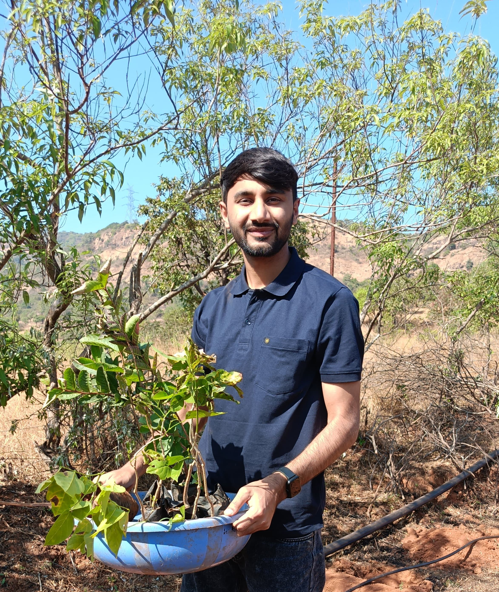
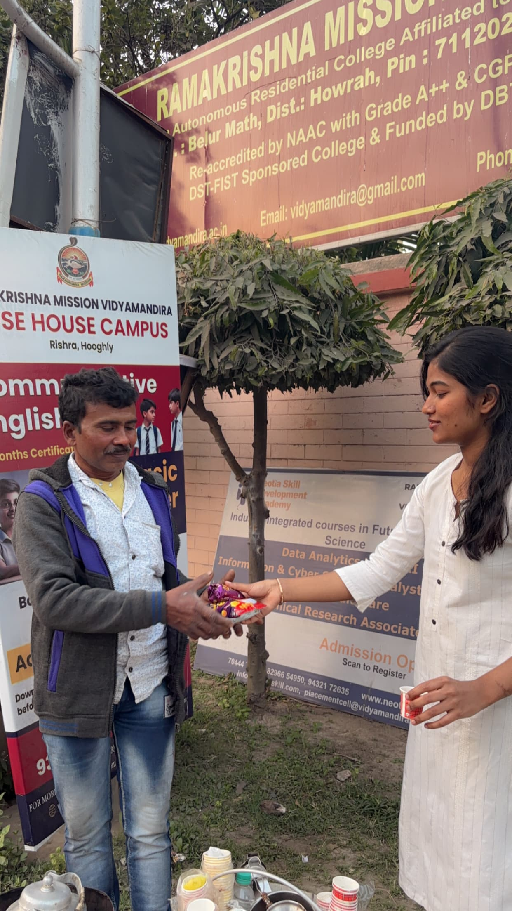
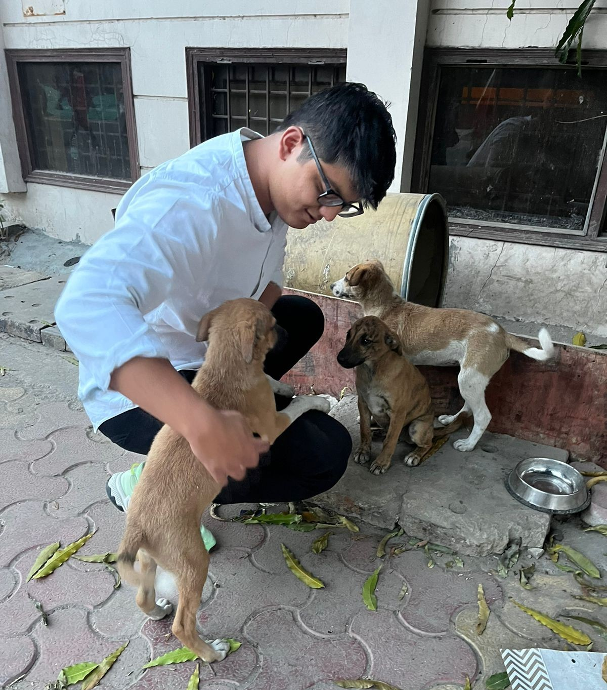
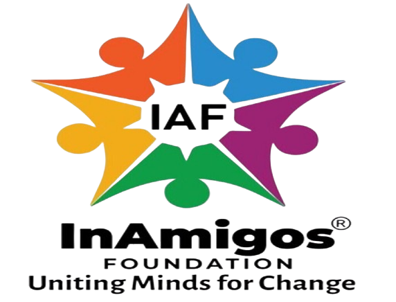

Gallery








The InAmigos Foundation was incorporated on September 23, 2020, based on an ideology that believes collective efforts bring about transformation. Our Section 8 incorporated NGO was founded by Mr. Govind Shukla, and we have been working in India with the help of professionals and volunteers who believe in what we do.
Our mission is built upon different projects, including education, animal welfare, environmental sustainability, and women's empowerment. All our projects rely on compassion, innovation, and community participation.
Building an inclusive society where every individual has access to opportunities and support.
Creating positive change through education, empowerment, sustainability, and social welfare.
Compassion, Integrity, Collaboration, Innovation, and Community Service.
Project SEVA supports underprivileged communities by providing food, clothing, and other essential resources through various donation drives and welfare initiatives.
Project BACHPANSHALA aims to bridge educational gaps among
underprivileged children by promoting digital literacy, life skills,
and academic support.
Project JEEV is dedicated to the welfare and care of stray and
abandoned animals through feeding programs and awareness campaigns.
Project UDAAN promotes women's empowerment through skill development, financial independence, and awareness regarding health and hygiene.
Project PRAKRITI works towards environmental conservation through tree plantation drives and awareness programs promoting sustainable living.
Project VIKAS focuses on skill development and internship opportunities to help students and young professionals gain industry exposure and experience.



Every small effort creates a big impact. Join InAmigos Foundation and contribute towards education, women empowerment, environmental sustainability, animal welfare, and skill development.